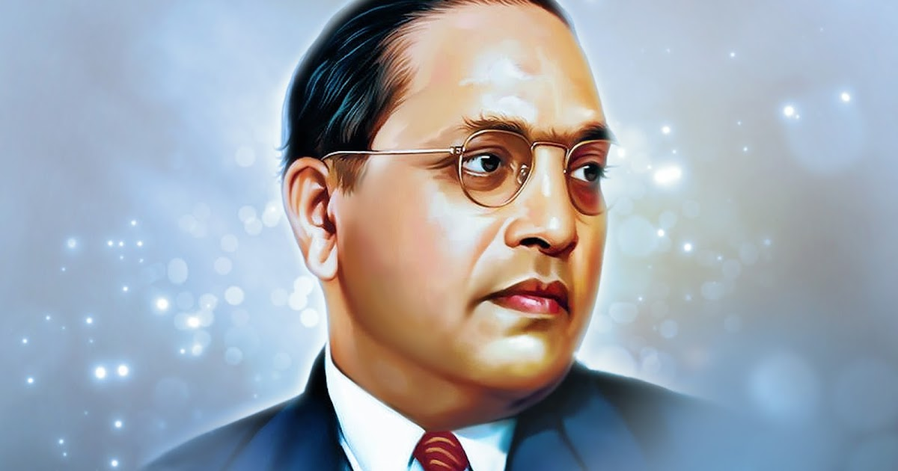

AMBEDKAR

B. R. Ambedkar
Ambedkar in the 1950s
Member of Parliament of Rajya Sabha for Bombay State
In office
3 April 1952 – 6 December 1956
President Rajendra Prasad
Prime Minister Jawaharlal Nehru
1st Minister of Law and Justice
In office
15 August 1947 – 6 October 1951
President Rajendra Prasad
Governors General Louis Mountbatten
C. Rajagopalachari
Prime Minister Jawaharlal Nehru
Preceded by Position established
Succeeded by Charu Chandra Biswas
Chairman of the Constitution Drafting Committee
In office
29 August 1947 – 24 January 1950
Member of the Constituent Assembly of India
In office
9 December 1946 – 24 January 1950
Constituency • Bengal Province (1946–47)
• Bombay Province (1947–50)
Minister of Labour in Viceroy's Executive Council
In office
22 July 1942 – 20 October 1946
Governors General The Marquess of Linlithgow
The Viscount Wavell
Preceded by Feroz Khan Noon
Legislative positions
Personal details
Pronunciation Bhīmrāo Rāmjī Āmbēḍkar
Born Bhiva Ramji Sakpal
14 April 1891
Mhow, Central India Agency, British India
(now Madhya Pradesh, India)
Died 6 December 1956 (aged 65)
New Delhi, India[1][2]
Resting place Chaitya Bhoomi
19°01′30″N 72°50′02″E
Political party Independent Labour Party
Scheduled Castes Federation
Other political
affiliations Republican Party of India
Spouses
Ramabai Ambedkar
(m. 1906; died 1935)
Savita Ambedkar (m. 1948)
Children Yashwant
Relatives Ambedkar family
Education University of Mumbai (BA, MA)
Columbia University (MA, PhD)
London School of Economics (MSc, DSc)
Gray's Inn
Profession
Juristeconomistpoliticiansocial reformerwriter
Awards Bharat Ratna
(1990, posthumous)
Signature
Nickname Babasaheb
Bhimrao Ramji Ambedkar (14 April 1891 – 6 December 1956) was an Indian jurist, economist, social reformer and political leader who headed the committee drafting the Constitution of India from the Constituent Assembly debates, served as Law and Justice minister in the first cabinet of Jawaharlal Nehru, and inspired the Dalit Buddhist movement after renouncing Hinduism.
After graduating from Elphinstone College, University of Bombay, Ambedkar studied economics at Columbia University and the London School of Economics, receiving doctorates in 1927 and 1923, respectively, and was among a handful of Indian students to have done so at either institution in the 1920s.[3] He also trained in the law at Gray's Inn, London. In his early career, he was an economist, professor, and lawyer. His later life was marked by his political activities; he became involved in campaigning and negotiations for partition, publishing journals, advocating political rights and social freedom for Dalits, and contributing to the establishment of the state of India. In 1956, he converted to Buddhism, initiating mass conversions of Dalits.[4]
In 1990, the Bharat Ratna, India's highest civilian award, was posthumously conferred on Ambedkar. The salutation Jai Bhim (lit. "Hail Bhim") used by followers honours him. He is also referred to by the nickname Babasaheb (BAH-bə SAH-hayb), meaning "Respected Father".
Early life
Ambedkar was born on 14 April 1891 in the town and military cantonment of Mhow (now officially known as Dr Ambedkar Nagar) (now in Madhya Pradesh).[5] He was the 14th and last child of Ramji Maloji Sakpal, an army officer who held the rank of Subedar, and Bhimabai Sakpal, daughter of Laxman Murbadkar.[6] His family was of Marathi background from the town of Ambadawe (Mandangad taluka) in Ratnagiri district of modern-day Maharashtra. Ambedkar was born into a Mahar (dalit) caste, who were treated as untouchables and subjected to socio-economic discrimination.[7] Ambedkar's ancestors had long worked for the army of the British East India Company, and his father served in the British Indian Army at the Mhow cantonment.[8] Although they attended school, Ambedkar and other untouchable children were segregated and given little attention or help by teachers. They were not allowed to sit inside the class. When they needed to drink water, someone from a higher caste had to pour that water from a height as they were not allowed to touch either the water or the vessel that contained it. This task was usually performed for the young Ambedkar by the school peon, and if the peon was not available then he had to go without water; he described the situation later in his writings as "No peon, No Water".[9] He was required to sit on a gunny sack which he had to take home with him.[10]
Ramji Sakpal retired in 1894 and the family moved to Satara two years later. Shortly after their move, Ambedkar's mother died. The children were cared for by their paternal aunt and lived in difficult circumstances. Three sons – Balaram, Anandrao and Bhimrao – and two daughters – Manjula and Tulasa – of the Ambedkars survived them. Of his brothers and sisters, only Ambedkar passed his examinations and went to high school. His original surname was Sakpal but his father registered his name as Ambadawekar in school, meaning he comes from his native village 'Ambadawe' in Ratnagiri district.[11][12][13][14] His Marathi Brahmin teacher, Krishnaji Keshav Ambedkar, changed his surname from 'Ambadawekar' to his own surname 'Ambedkar' in school records
Education
Ambedkar as a student
In 1897, Ambedkar's family moved to Mumbai where Ambedkar became the only untouchable enrolled at Elphinstone High School. In 1906, when he was about 15 years old, he married a nine-year-old girl, Ramabai. The match was arranged by the couple's parents, in accordance with prevailing custom at that time.[20]
In 1907, he passed his matriculation examination and in the following year he entered Elphinstone College, which was affiliated to the University of Bombay, becoming, according to him, the first from his Mahar caste to do so. When he passed his English fourth standard examinations, the people of his community wanted to celebrate because they considered that he had reached "great heights" which he says was "hardly an occasion compared to the state of education in other communities". A public ceremony was evoked, to celebrate his success, by the community, and it was at this occasion that he was presented with a biography of the Buddha by Dada Keluskar, the author and a family friend.[21]
By 1912, he obtained his degree in economics and political science from Bombay University, and prepared to take up employment with the Baroda state government. His wife had just moved his young family and started work when he had to quickly return to Mumbai to see his ailing father, who died on 2 February 1913.[22]
Ambedkar at Columbia University, c. 1916
In 1913, at the age of 22, Ambedkar was awarded a Baroda State Scholarship of £11.50 (Sterling) per month for three years under a scheme established by Sayajirao Gaekwad III (Gaekwad of Baroda) that was designed to provide opportunities for postgraduate education at Columbia University in New York City. Soon after arriving there he settled in rooms at Livingston Hall with Naval Bhathena, a Parsi who was to be a lifelong friend. He passed his M.A. exam in June 1915, majoring in economics, and other subjects of Sociology, History, Philosophy and Anthropology. He presented a thesis, Ancient Indian Commerce. Ambedkar was influenced by John Dewey and his work on democracy.[23] In 1916, he completed his second master's thesis, National Dividend of India – A Historic and Analytical Study, for a second M.A.[24] On 9 May, he presented the paper Castes in India: Their Mechanism, Genesis and Development before a seminar conducted by the anthropologist Alexander Goldenweiser. Ambedkar received his Ph.D. degree in economics at Columbia in 1927.[3]
Ambedkar (In center line, first from right) with his professors and friends from the London School of Economics (1916–17)
In October 1916, he enrolled for the Bar course at Gray's Inn, and at the same time enrolled at the London School of Economics where he started working on a doctoral thesis. In June 1917, he returned to India because his scholarship from Baroda ended. His book collection was dispatched on a different ship from the one he was on, and that ship was torpedoed and sunk by a German submarine.[22] He got permission to return to London to submit his thesis within four years. He returned at the first opportunity, and completed a master's degree in 1921. His thesis was on "The problem of the rupee: Its origin and its solution".[25] In 1923, he completed a D.Sc. in Economics which was awarded from University of London, and the same year he was called to the Bar by Gray's Inn.[3
Death
Mahaparinirvana of B. R. Ambedkar
Since 1948, Ambedkar had diabetes. He remained in bed from June to October in 1954 due to medication side-effects and poor eyesight.[85] His health worsened during 1955. Three days after completing his final manuscript The Buddha and His Dhamma, Ambedkar died in his sleep on 6 December 1956 at his home in Delhi.[90]
A Buddhist cremation was organised at Dadar Chowpatty beach on 7 December,[91] attended by half a million grieving people.[92] A conversion program was organised on 16 December 1956,[93] so that cremation attendees were also converted to Buddhism at the same place.[93]
Ambedkar was survived by his second wife Savita Ambedkar (known as Maisaheb Ambedkar), who died in 2003,[94] and his son Yashwant Ambedkar (known as Bhaiyasaheb Ambedkar), who died in 1977.[95] Savita and Yashwant carried on the socio-religious movement started by B. R. Ambedkar. Yashwant served as the 2nd President of the Buddhist Society of India (1957–1977) and a member of the Maharashtra Legislative Council (1960–1966).[96][97] Ambedkar's elder grandson, Prakash Yashwant Ambedkar, is the chief-adviser of the Buddhist Society of India,[98] leads the Vanchit Bahujan Aghadi[99][100] and has served in both houses of the Indian Parliament.[100] Ambedkar's younger grandson, Anandraj Ambedkar leads the Republican Sena (tran: The "Republican Army").[101]
A number of unfinished typescripts and handwritten drafts were found among Ambedkar's notes and papers and gradually made available. Among these were Waiting for a Visa, which probably dates from 1935 to 1936 and is an autobiographical work, and the Untouchables, or the Children of India's Ghetto, which refers to the census of 1951.[85]
A memorial for Ambedkar was established in his Delhi house at 26 Alipur Road. His birthdate known as Ambedkar Jayanti or Bhim Jayanti is observed as a public holiday in many Indian states. He was posthumously awarded India's highest civilian honour, the Bharat Ratna, in 1990.[102]
On the anniversary of his birth and death, and on Dhamma Chakra Pravartan Din (14 October) at Nagpur, at least half a million people gather to pay homage to him at his memorial in Mumbai.[103] Thousands of bookshops are set up, and books are sold. His message to his followers was "educate, agitate, organise!"[104]